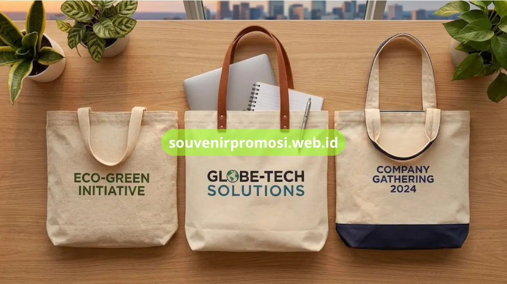

Tote bag kanvas custom adalah tas souvenir berbahan kanvas tebal yang dicetak logo perusahaan dan digunakan sebagai merchandise korporat yang fungsional untuk aktivitas harian penerimanya. Produk ini tersedia dalam beberapa ukuran, model tali, dan metode sablon yang dapat disesuaikan dengan kebutuhan acara perusahaan. Katalog lengkap tote bag kanvas custom dapat dilihat dan dipesan langsung di souvenirpromosi.web.id.
Poin Penting
- Material utama kanvas tebal dan blacu untuk dua segmen anggaran berbeda
- Area cetak logo lebih luas dibandingkan media promosi lain
- Tersedia beberapa ukuran dan model tali sesuai kebutuhan
- Cocok untuk pameran, corporate gathering, dan hadiah onboarding karyawan
- Pemesanan grosir dilayani langsung oleh tim souvenirpromosi.web.id
Daftar Isi
Apa Itu Tote Bag Kanvas Custom untuk Souvenir Perusahaan?
Tote bag kanvas custom adalah tas berbahan dasar kanvas yang dicetak logo perusahaan melalui teknik sablon atau digital printing, kemudian dijadikan souvenir untuk klien, karyawan, atau peserta acara.
Bentuk tas ini banyak dipakai ulang oleh penerimanya untuk membawa dokumen, laptop, maupun keperluan belanja harian, sehingga logo perusahaan berpotensi terlihat berulang kali di berbagai situasi, mulai dari area kantor hingga ruang publik.
Material Tote Bag Kanvas dan Blacu yang Tersedia di souvenirpromosi.web.id
Katalog souvenirpromosi.web.id menyediakan dua pilihan material tote bag untuk kebutuhan souvenir korporat.
Tote Bag Kanvas Tebal
Tote bag kanvas tebal memiliki tekstur yang kokoh dan mampu menahan beban dokumen acara, goodie bag, atau bingkisan lain dalam kapasitas cukup besar. Permukaan kanvas yang rata membuat hasil sablon logo tampak lebih tajam dan tahan lama.
Tote Bag Blacu Ramah Lingkungan
Tote bag berbahan blacu menjadi opsi dengan anggaran per unit lebih terjangkau untuk pemesanan dalam jumlah besar. Material ini tetap mempertahankan kesan alami dan cocok untuk desain sablon satu warna maupun multiwarna sederhana.

Area Cetak Logo dan Model Tali Tote Bag Custom
Bidang tote bag kanvas yang lebar memberikan ruang desain logo yang lebih leluasa dibandingkan media promosi lain seperti pulpen atau gantungan kunci. Souvenirpromosi.web.id menyediakan beberapa model tali, mulai dari tali pendek untuk model jinjing hingga tali panjang untuk model selempang, yang dapat disesuaikan dengan fungsi penggunaan tote bag pada acara perusahaan.
Ukuran dan Kapasitas Tote Bag Kanvas Custom yang Bisa Dipesan
Ukuran tote bag kanvas custom di souvenirpromosi.web.id dapat disesuaikan mulai dari ukuran ringkas untuk membawa dokumen tipis hingga ukuran besar yang mampu memuat laptop dan perlengkapan seminar. Kombinasi ukuran dan model tali ini memudahkan panitia acara menentukan varian tote bag sesuai fungsi acara, baik untuk pameran dagang, corporate gathering, maupun paket onboarding karyawan baru.
Kesimpulan
Tote bag kanvas custom, baik varian kanvas tebal maupun blacu, menghadirkan souvenir fungsional dengan area branding yang luas untuk berbagai kebutuhan acara perusahaan. Kunjungi souvenirpromosi.web.id sekarang untuk menentukan material, ukuran, dan desain logo tote bag custom perusahaan Anda.